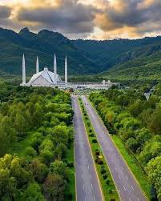

Islamabad The Capital
Islamabad, the capital of Pakistan, located against the backdrop of Margalla Hills is lush green spacious and serene. Situated amidst the picturesque Pothohar plateau the city was conceived in 1960. Islamabad is a meticulously planned city with wide tree-lined streets, elegant public buildings and well-organized bazaars.
The walkways are shaded and separated from the traffic by rows of flame trees, jacaranda and hibiscus. Roses, jasmine and bougainvillea fill the parks and scenic viewpoints provide the city its lustrous look. Islamabad is adorned by attractive buildings reflecting modern architectural trends such as Shah Faisal Mosque, Federal Government Secretariat, Parliament House, Prime Minister's Office, Presidency and Supreme Court of Pakistan along with many commercial complexes.
Places to visit in Islamabad
- Shah Faisal Masjid
- Pakistan Monument
- Daman-e-Koh
- Lok virsa Heritage Museum
Islamabad offers many cultural spots depicting the beauty and variety of Pakistani culture. The premier cultural hub is the legendary Lok Virsa Heritage Museum depicting multiple phases of the life, traditions and history of the people of Pakistan through a chronological sequence. It contains a large display of embroidered costumes, jewellery, woodwork, metal work, block printing, ivory and bone work along with traditional architectural facade exhibiting fresco, mirror work, marble inlay, tile mosaic and stucco tracery from different regions of Pakistan.